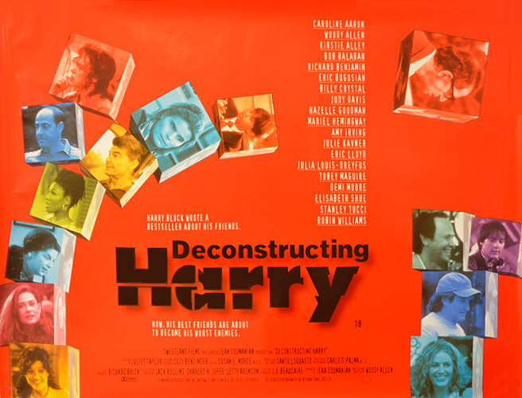
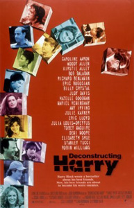
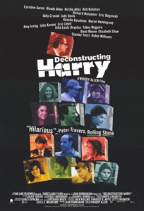
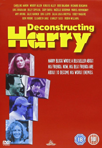

One night, Lucy (Judy Davis) gets a taxi to the home of author Harry Block (Woody Allen). She has just read Harry's latest novel. In the novel, the character Leslie (Julia Louis-Dreyfus) is having an affair with her sister's husband Ken (Richard Benjamin). Lucy is angry because the novel is patently based on her and Harry's own affair; as a result, everyone knows about it. Lucy pulls a gun out of her purse, saying she will kill herself. She then turns the gun on Harry and begins firing. She chases him out onto the roof. Harry insists that he has already been punished: his latest girlfriend Fay (Elisabeth Shue) has left him for his best friend Larry (Billy Crystal). To distract Lucy, Harry tells her a story he is currently writing: a semi-autobiographical story of a sex-obsessed young man named Harvey (Tobey Maguire) who is mistakenly claimed by Death.
In therapy, Harry realizes he has not changed since he was a sex-obsessed youth. Harry discusses the honouring ceremony at his old university, taking place the next day; he is particularly unhappy that he has nobody with whom to share the occasion. After the session, Harry asks his ex-wife Joan (Kirstie Alley) if he can take their son Hilliard (Eric Lloyd) to the ceremony. She refuses, stating that Harry is a bad influence on Hilliard. She is also furious at Harry for the novel he wrote. In it, the character Epstein (Stanley Tucci) marries Helen (Demi Moore), but the marriage begins to crumble after the birth of their son.
Harry runs into an acquaintance, Richard (Bob Balaban), who is worried about his health. After accompanying Richard to the hospital, Harry asks him to come to the university ceremony. Richard appears uninterested. Harry then goes to meet his ex-girlfriend Fay, who reveals that she is now engaged. Harry begs Fay to get back together with him. He asks Fay to accompany him to his ceremony, but it clashes with Fay's wedding, scheduled the following day.
That night, Harry sleeps with a prostitute, Cookie (Hazelle Goodman). Harry then asks Cookie to accompany him to his ceremony.
In the morning, Richard unexpectedly arrives to join Harry and Cookie on the journey. On a whim, Harry decides to "kidnap" his son Hilliard. Along the way, they stop at a carnival, then at Harry's half-sister Doris's (Caroline Aaron). Doris, a devoted Jew, is upset by Harry's portrayals of Judaism in his stories, as is her husband (Eric Bogosian). During the journey, Harry also encounters his fictional creations Ken and Helen, who force him to confront some painful truths about his life. Just before arriving at the university, Richard dies peacefully in the car.
Distressed, Harry literally slides out of focus, becoming blurred like one of his own fictional characters. Cookie helps him restore focus. The university's staffers gush over Harry, asking what he plans to write next. He describes a story about a man (based on himself) who journeys down to Hell to reclaim his true love (based on Fay) from the Devil (based on Larry - both being played by Billy Crystal). Harry and the Devil engage in a verbal duel as to who is truly the more evil of the two. Harry gets as far as arguing that he is a kidnapper before the story is interrupted by the arrival of the police. Harry is arrested for kidnapping Hilliard, for possessing a gun (it was Lucy's), and for having drugs in the car (belonging to Cookie).
Larry and Fay come from their wedding to bail Harry out of jail. Harry reluctantly gives them his blessings. Back at his apartment, a miserable Harry fantasizes that the university's ceremony is taking place. Harry realizes that he can only function in art, not in life. The film ends with Harry returning to his writing.
Woody Allen based Harry's trip on Ingmar Bergman's film Wild Strawberries (1957). Bergman is said to be Allen's favourite director. It is acknowledged by some critics that Woody Allen based the name of Harry Block on Antonius Block, the protagonist from The Seventh Seal (1957).
The film is also similar to Fellini's 8½ (1963), in that it is about an artist struggling with his current relationships and remembering his old ones, interspersed with dream sequences, as well as his work being based on events from his life. The film is also a general reworking of Woody Allen's earlier film Stardust Memories (1980), which also had an artist go to a ceremony in his honour, while reminiscing over past relationships and trying to fix and stabilize current ones.
Robert De Niro, Dustin Hoffman, Dennis Hopper, Elliott Gould and Jack Nicholson were sought in vain for the role of Harry Block. Albert Brooks was the last actor to be offered the role of Harry. In an interview with Playboy magazine, he stated that he received a nice letter from Woody Allen offering him the role. Brooks responded, "It was insane that Allen didn't do it himself." Apparently, Woody took his advice.
Some critics, including Roger Ebert, have suggested that the character of Harry Block is based on real-life author Philip Roth and not on Woody Allen himself.
- Drew University - 36 Madison Avenue, Madison, New Jersey;
- Bethesda Fountain, Central Park, Manhattan;
- Red Apple Rest Restaurant - Tuxedo, New York, USA.
Doris: "You have no values. Your whole life, it's nihilism, it's cynicism, it's sarcasm and your orgasm."
Harry Block: "You know in France, I could run on that slogan and win."
"Deconstructing Harry is abrasive, complex, lacerating and self-revelatory. It's also very funny, most of the time." - David Stratton : Variety
"Too bad it is difficult to really care about what is going on since such a thoroughly unpleasant character is at the center." - Michael Dequina : TheMovieReport.com


